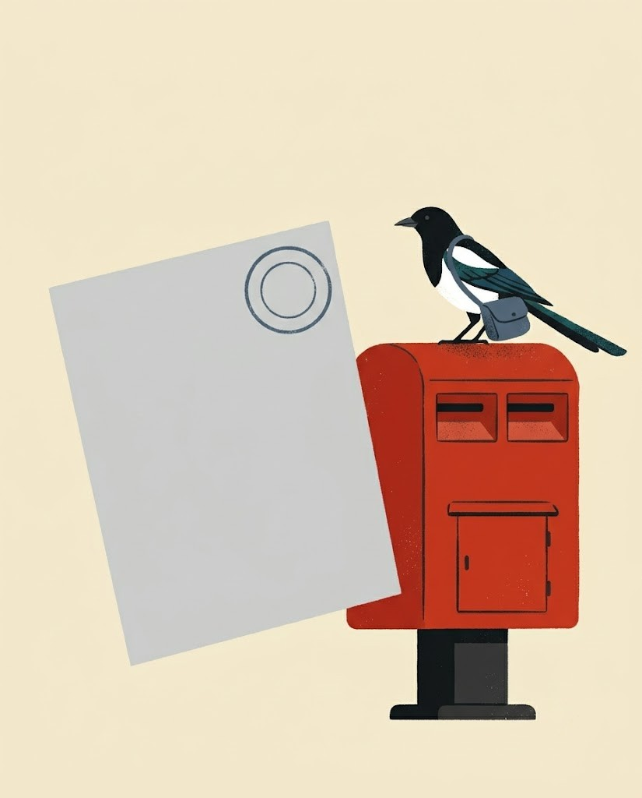
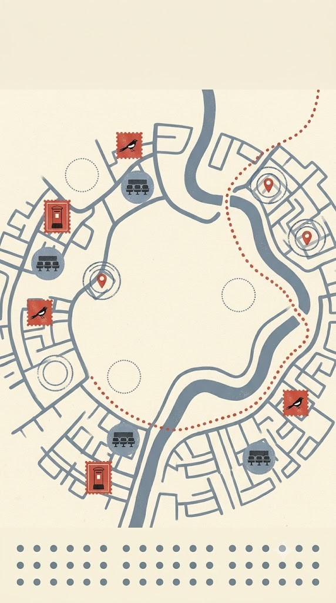
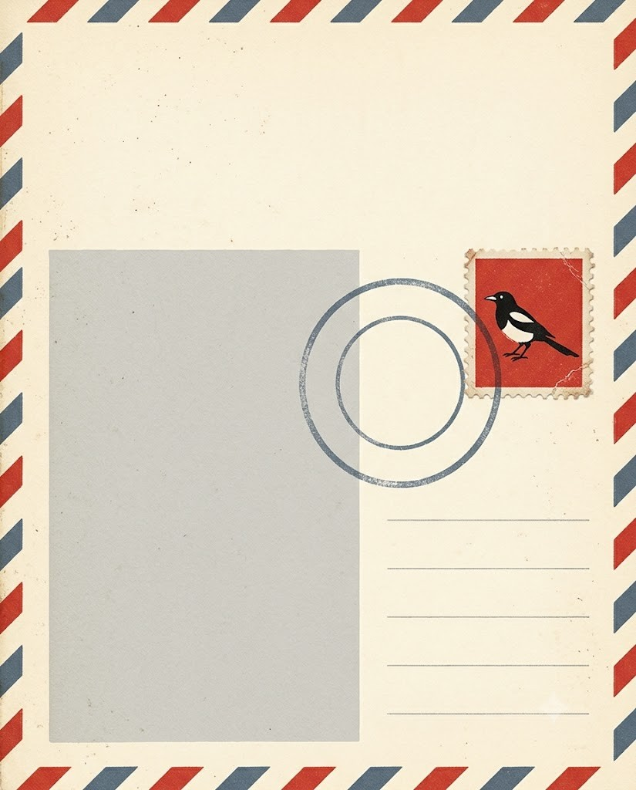
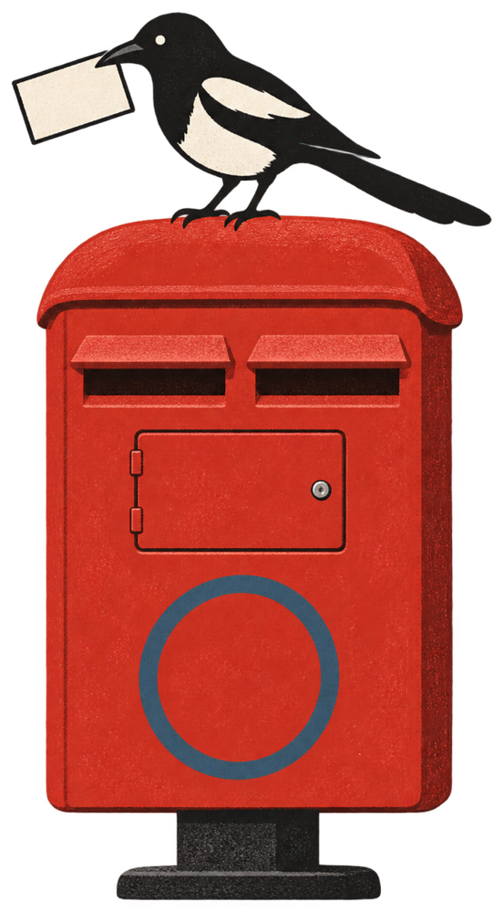
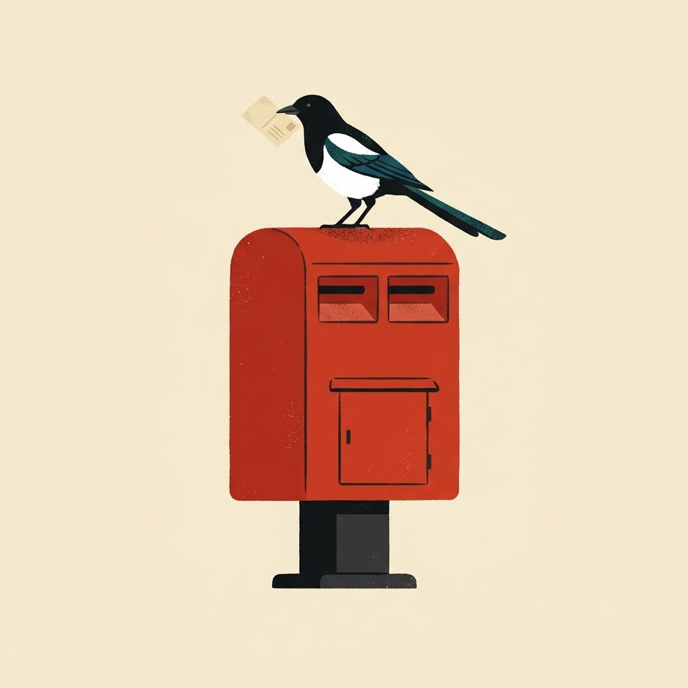
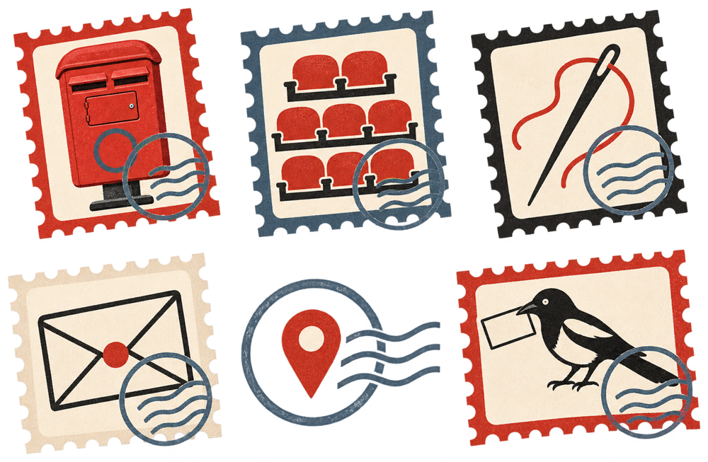

시안 비교를 거쳐 브랜드 그림을 확정했다. 상징은 소식을 배달하는 까치 하나이고, 쓰는 자리마다 우편의 사물 하나씩을 맡긴다. 우체통은 한국 우체통으로 다시 그렸다.
로고·프로필 = 한국 우체통빨간 사각 몸체, 투입구 두 개, 위에 엽서를 문 까치
앱 우표첩 = 동네 배달 지도다녀온 동네에 도장, 안 간 곳은 빈 원
인스타 게시물 = 엽서앞면 공식 포스터 + 소인, 뒷면 정보 칸
세 자리, 한 이야기

이번 주, 어디 가지?
1 · 소식이 모인다
한국 우체통
로고·프로필·앱 아이콘, 릴스 오프닝. 제보는 우체통에 넣는 것, 구독은 꺼내 받는 것.

우리 동네 도장 지도 · 11월
2 · 동네를 따라 배달한다
동네 배달 지도
앱 우표첩. 현장 소인이 찍힌 동네가 채워진다. 시군 세트(세 곳·멀리 가기)가 그대로 화면이 된다.

이번 주, 어디 가지?11.08 토
3 · 엽서로 도착한다
엽서 한 장
인스타 카드뉴스·소식지. 앞면은 공식 포스터, 뒷면은 받는 곳(장소)·우표 값(요금)·소인(날짜).
까치가 우체통에서 소식을 꺼내 → 동네 지도를 따라 → 엽서로 배달한다
로고

pica
기본 로고 · 소인 안에 pica

인스타·유튜브 프로필 · 원형으로 잘린 모습
pica
가까운 공연·전시·축제
가로 조합 · 채널 표지·현수막
한국 우체통으로 그린다. 둥근 원통형(영국식)은 쓰지 않는다. 실제 우정사업본부 마크·제비 문양·글자는 넣지 않는다.
까치는 늘 왼쪽을 보고 앉아 엽서를 문다. 뒤집지 않는다.
최소 크기: 화면 24px, 인쇄 8mm. 그보다 작으면 소인을 빼고 우체통과 까치만.
색 · 글꼴 · 도장
편지 크림#F6EFDF 바탕 · 60%
청회색#4F6272 소인·지도 길·보조 글자 · 18%
먹#1C1C1C 본문·까치 · 12%
우체통 빨강#D33A2C 우체통·우표·경로 · 10%
글꼴
Black Han Sans 로고 글자·제목·날짜
Pretendard 본문·정보
IBM Plex Mono 배달 번호 No.045·소인 날짜
손글씨는 글꼴 대신 운영자 글씨 스캔
명암비
빨강 글자는 24px 이상 굵은 제목에만(크림 위 4.2). 빨강과 청회색은 맞붙이지 않는다. 빨강을 오류 표시에 쓰지 않는다.
도장 6종 (한 판으로 통일)

배달(제보)관람(후기)수선(정정)답장(댓글)현장 소인기념 우표
지금 바뀐 것과 남은 일
항목
상태
브랜드 가이드(docs/BRAND_GUIDE.md) 요약·색·글꼴·로고 절
까치 우편 기준으로 고침
공개 사이트 색
아직 리소 테마(신문지·리소 파랑·형광 분홍). 까치 우편 색으로 바꾸는 코드 작업은 따로 해야 한다
로고 원본
지금 파일은 AI 시안. 사람이 벡터로 다시 그려 원본으로 쓴다
도장·소인 실물
pica 소인 도장과 회전식 날짜 도장 제작(H안 문서 6절)
앱 우표첩
설계만 있음(H안 문서 3·4절). 커뮤니티 1단계에서 구현
이미지는 운영자 계정의 ChatGPT(로고·도장, 투명 배경)와 Gemini(프로필·표지·우표첩)로 만든 시안이다. 이미지 안에는 글자가 없고, 한글과 pica는 이 페이지에서 얹었다. 엽서 표지 오른쪽 아래에는 Gemini 워터마크가 흐리게 남아 있다. 날짜는 예시다.